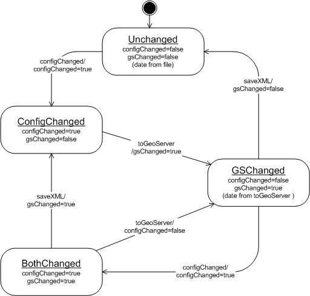

Maintains the GeoServer applicaiton state (This is the Application).
Common state used by the GeoServer Servlets is maintained by this package.
Features:
-
Contains the actual server state - that is WMS reflects the state of the
Web Map Server
-
These classes should be saved in the Web Container
(rather than the current singletons)
-
Application set up is provided using Data Transfer Objects from the global.dto
package. Both the initial loading the initial XML configuration files and the
dynamic configuraiton systems are handled in this manner.
-
Data contains "real" GeoTools2 DataStores with JDBC connections (and implements the
GeoTools2 Catalog Interface)

GeoServer State Diagram
We would like to bootstrap this process using the STRUTS plug-in interface and
store the GeoServer application state in the Web Container. Currently this
information is accessed by a singleton, and bootstraped by the first GeoServer
servlet request (JG - I think ).